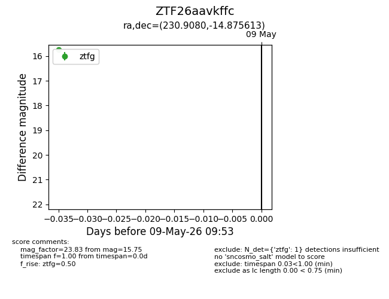
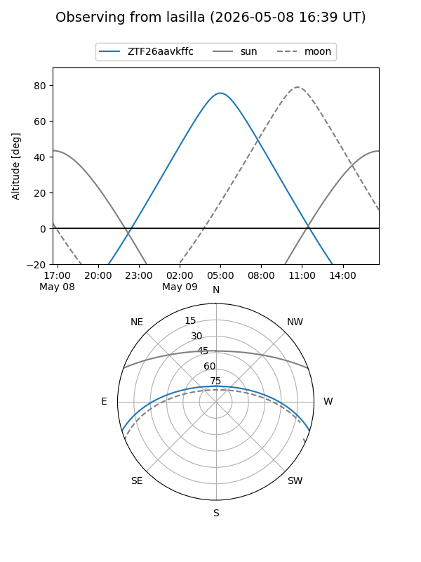
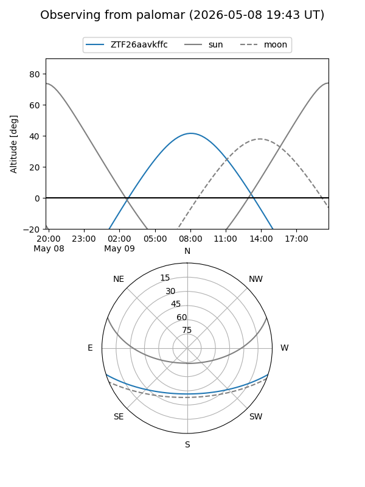

ZTF26aavkffc
Target ZTF26aavkffc at 2026-05-09 09:54
Aliases and brokers:
FINK: link
Lasair: link
ALeRCE: link
alt names
ZTF26aavkffc (ztf,fink_ztf)
Coordinates:
equatorial (ra, dec) = 230.9080,-14.87561
equatorial (HMS+DMS) = 15:23:37.93,-14:52:32.21
galactic (l, b) = (348.9174,+34.07695)
Flags:
Photometry:
last ztfg=15.75
1 ztfg detections
Lightcurve

Visibility


Additional plots